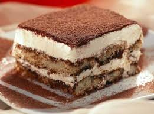

Tiramissu

Descripcion del tiramissu
Este postre es muy facil, ya que al no contar con todos los ingredientes busque la menera de que pueda quedar igual al original, es muy rapido y economico, busque una menera de que no quede muy dulce, este que voy a hacer lleva licor, no esta recomendado para niños, pero si deseas puede no agregarlo
Ingredientes:
- Vainillas (cant. necesaria)
- Dulce de leche 500gr.
- Queso crema 300gr.
- Cafe instantaneo 4 cucharadas colmadas
- Cacao
- Licor de cafe
- Colador para el cacao
Pasos
- Hacer el cafe, dos tazas, cada una con dos cucharads
- una vez frio el cafe agregar el licor, 2 cucharadas por taza.
- Mezclar el dulce de leche con el queso crema.
- En un molde cuadrado preferentmente (las vainillas quedan enteras)
- hacemos una base de vainillas, a medida que las ubicamos la remojamos en un recipiente con el cafe (agregar de a poco el cafe asi no se rompen las vainillas)
- sobre las vainillas la mezcla del queso y dulce, hacemos una capa, expolvoreamos el cacao.
- colocamos otra capa de vainillas y repetimos el preceso hasta terminar y quede parejo.
- una vez terminado como ultima capa el cacao, si te queda algo de mezcla puede poner unos piquitos anque queda muy bien solo cacao